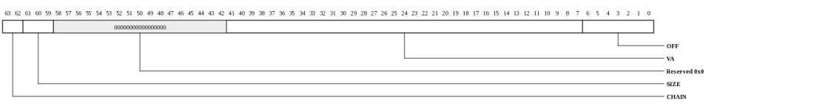
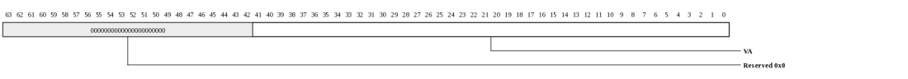
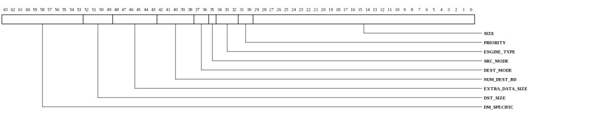
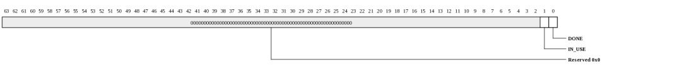
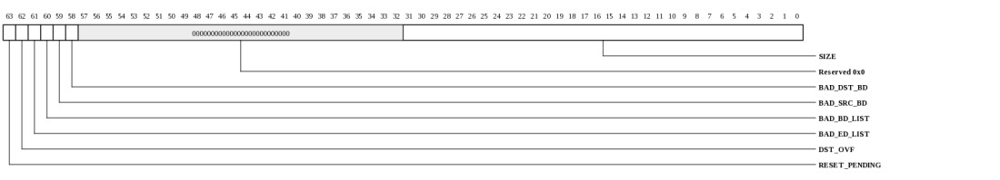

Register Summary
| Address | Register
| 0000 | MICA_CRYPTO_CTX_USER_SRC_DATA | 0008 | MICA_CRYPTO_CTX_USER_DEST_DATA | 0010 | MICA_CRYPTO_CTX_USER_EXTRA_DATA_PTR | 0018 | MICA_CRYPTO_CTX_USER_OPCODE | 0020 | MICA_CRYPTO_CTX_USER_IN_USE | 0028 | MICA_CRYPTO_CTX_USER_CONTEXT_STATUS | |
|---|
Register Definitions
Source Data (MICA_CRYPTO_CTX_USER_SRC_DATA: 0x0000)
This Context User register specifies where source data is located.
| Bits | Name | Type | Reset | Description
| 63:62 | CHAIN | RW | 0 | Chain | 61:59 | SIZE | RW | 0 | Size | 41:7 | VA | RW | 0 | Virtual Address | 6:0 | OFF | RW | 0 | Offset | |
|---|
Destination Data (MICA_CRYPTO_CTX_USER_DEST_DATA: 0x0008)
This Context User register specifies where destination data is located.
| Bits | Name | Type | Reset | Description
| 63:62 | CHAIN | RW | 0 | Chain | 61:59 | SIZE | RW | 0 | Size | 41:7 | VA | RW | 0 | Virtual Address | 6:0 | OFF | RW | 0 | Offset | |
|---|
Extra Data Pointer (MICA_CRYPTO_CTX_USER_EXTRA_DATA_PTR: 0x0010)
This Context User register contains the Virtual Address pointer to Extra Data, if any, associated with the operation.
| Bits | Name | Type | Reset | Description
| 41:0 | VA | RW | 0 | Virtual Address of the Extra Data. | |
|---|
Opcode (MICA_CRYPTO_CTX_USER_OPCODE: 0x0018)
NOTE: This register only exists in the following devices: Gx9 Gx16 Gx36 Gx72.This Context User register specifies the operation to be performed.

| Bits | Name | Type | Reset | Description
| 63:53 | DM_SPECIFIC | RW | 0 | The use of these bits is specific to each MiCA type. | 52:49 | DST_SIZE | RW | 0 | This field specifies how much extra size is allowed for destination data, relative to source size. For compression/decompression the value is a multiplier of source size with value 0 being 1x, and values 1 through 9 being 1/4, 1/2, 2, 4, 8, 16, 64, 256, and 2048. For crypto the value indicates number of bytes added to source size, with values 0 through 11 being 0, 1, 2, 4, 8, 16, 32, 64, 128, 256, 512, and 1024. | 48:43 | EXTRA_DATA_SIZE | RW | 0 | Number of 8-byte words of Extra Data. The usage of Extra Data is specific to each MiCA type. A value of 0 means no Extra Data. If the amount of Extra Data is not an integral number of 8 bytes, the unused bytes at the end must be set to 0. | 42:38 | NUM_DEST_BD | RW | 0 | The number of destination Buffer Descriptors (only used when DEST_MODE is BUFF_DESC_LIST). The value is the number of descriptors, except a value 0 means 32 descriptors. | 37:36 | DEST_MODE | RW | 0 | Controls the usage of the DEST_DATA User Context register. |
35 | SRC_MODE | RW | 0 | Control the usage of tde SRC_DATA User Context register. |
34:32 | ENGINE_TYPE | RW | 0 | Defines which type of Engine in the MiCA should do the operation. Type 0 and 1 are common for all MiCAs, Type 2 through 7 are defined for each MiCA type. |
31:30 | PRIORITY | RW | 0 | This field selects the priority level for the operation. 0 is highest priority, 3 is lowest. | 29:0 | SIZE | RW | 0 | Size of the operation source data, in bytes. Note that the size of the destination data is a function of the size of the source data and the operation performed. | |
|---|
Context In Use (MICA_CRYPTO_CTX_USER_IN_USE: 0x0020)
This Context User register is used to provide the status of a Context. It can be used for polling for completion.
| Bits | Name | Type | Reset | Description
| 1 | IN_USE | RO | 0 | Reads as '1' when the Context is not in IDLE state (see Status Register). | 0 | DONE | RO | 0 | Reads as '1' when the Context has completed an operation (see Status Register). | |
|---|
Context Status (MICA_CRYPTO_CTX_USER_CONTEXT_STATUS: 0x0028)
This Context User register specifies status about an operation. It is written by HW when the operation completes or has an error. Specific engines (e.g. crypto, inflate, deflate) may provide additional customization of this register.
| Bits | Name | Type | Reset | Description
| 63 | RESET_PENDING | RO | 0 | The RESET bit in the CONTROL register was written to 1. | 62 | DST_OVF | RO | 0 | Destination overflow. The operation needed to write more data than the space provided. | 61 | BAD_ED_LIST | RO | 0 | The source eDMA list address was not properly aligned (bits [6:0] were not 0) or an eDMA entry had a size of zero. | 60 | BAD_BD_LIST | RO | 0 | The destination buffer descriptor list address was not properly aligned (bits [6:0] were not 0). | 59 | BAD_SRC_BD | RO | 0 | The source buffer descriptor either was chain with an offset less than 8, or had an invalid type code. | 58 | BAD_DST_BD | RO | 0 | The destination buffer descriptor either was chain with an offset less than 8, or had an invalid type code. | 31:0 | SIZE | RO | 0 | Number of bytes of destination data written to memory by the operation. | |
|---|
Copyright © 2014 Tilera® Corporation. All rights reserved. Printed in the United States of America.
No part of this book may be reproduced, stored in a retrieval system, or transmitted in any form or by any means, electronic, mechanical, photocopying, recording, or otherwise, except as may be expressly permitted by the applicable copyright statutes or in writing by the Publisher.
The following are registered trademarks of Tilera Corporation: Tilera and the Tilera logo. The following are trademarks of Tilera Corporation: Embedding Multicore, The Multicore Company, Tile Processor, TILE Architecture, TILE64, TILEPro, TILEPro36, TILEPro64, TILExpress, TILExpress-64, TILExpressPro-64, TILExpress-20G, TILExpressPro-20G, TILExpressPro-22G, iMesh, TileDirect, TILEmpower, TILEmpower-Gx, TILEncore, TILEncorePro, TILEncore-Gx, TILE-Gx, TILE-Gx16, TILE-Gx36, TILE-Gx64, TILE-Gx100, TILE-Gx3000, TILE-Gx5000, TILE-Gx8000, DDC (Dynamic Distributed Cache), Multicore Development Environment, Gentle Slope Programming, iLib, TMC (Tilera Multicore Components), hardwall, Zero Overhead Linux (ZOL), MiCA (Multicore iMesh Coprocessing Accelerator), and mPIPE (multicore Programmable Intelligent Packet Engine). All other trademarks and/or registered trademarks are the property of their respective owners.
Third-party software: The Tilera IDE makes use of the BeanShell scripting library. Source code for the BeanShell library can be found at the BeanShell website (http://www.beanshell.org/developer.html).
The following is a trademark of Marvell Semiconductor, Inc.: Distributed Switching Architecture (DSA).
This document contains advance information on Tilera products that are in development, sampling or initial production phases. This information and specifications contained herein are subject to change without notice at the discretion of Tilera Corporation.
No license, express or implied by estoppels or otherwise, to any intellectual property is granted by this document. Tilera disclaims any express or implied warranty relating to the sale and/or use of Tilera products, including liability or warranties relating to fitness for a particular purpose, merchantability or infringement of any patent, copyright or other intellectual property right.
Products described in this document are NOT intended for use in medical, life support, or other hazardous uses where malfunction could result in death or bodily injury.
THE INFORMATION CONTAINED IN THIS DOCUMENT IS PROVIDED ON AN "AS IS" BASIS. Tilera assumes no liability for damages arising directly or indirectly from any use of the information contained in this document.